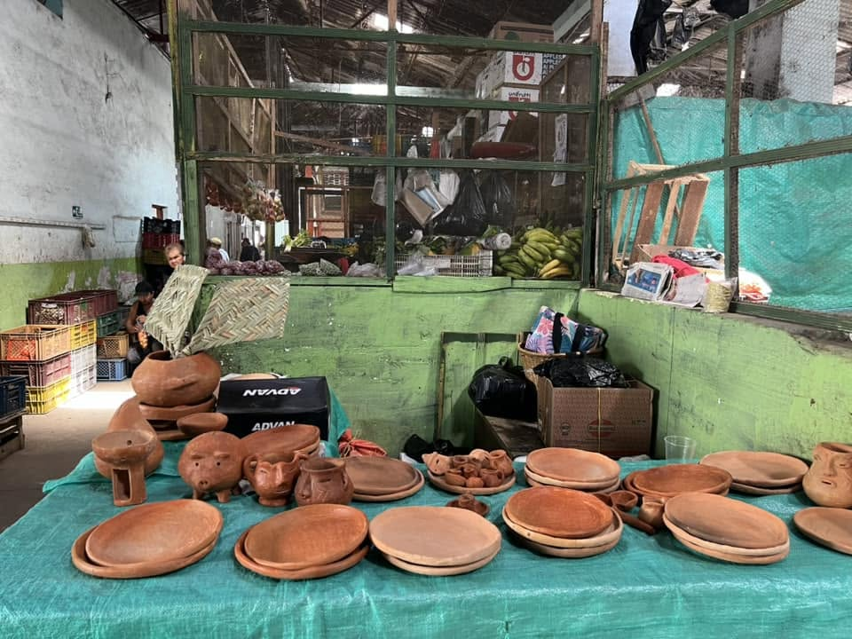
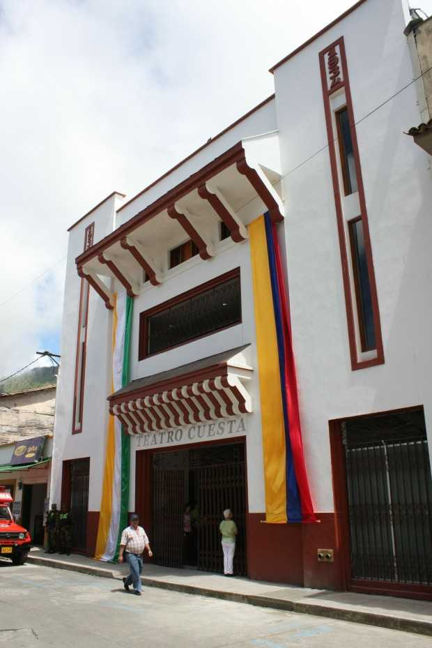

Mercados y Actividades Culturales
Espacios comunitarios donde se vive la cultura campesina y el comercio local.

Galería y Plaza de Mercado
Despensa agrícola de la región donde confluyen saberes mestizos e indígenas; miércoles y sábados son los días de mayor movimiento.

Teatro Cuesta
Declarado Patrimonio Histórico y Artístico de la Nación, es el escenario principal de la vida cultural riosuceña desde 1934.

Ecoparque Fundadores
Espacio público multipropósito que combina recreación familiar, deporte comunitario y zonas verdes urbanas.
Aquí irá el mapa interactivo